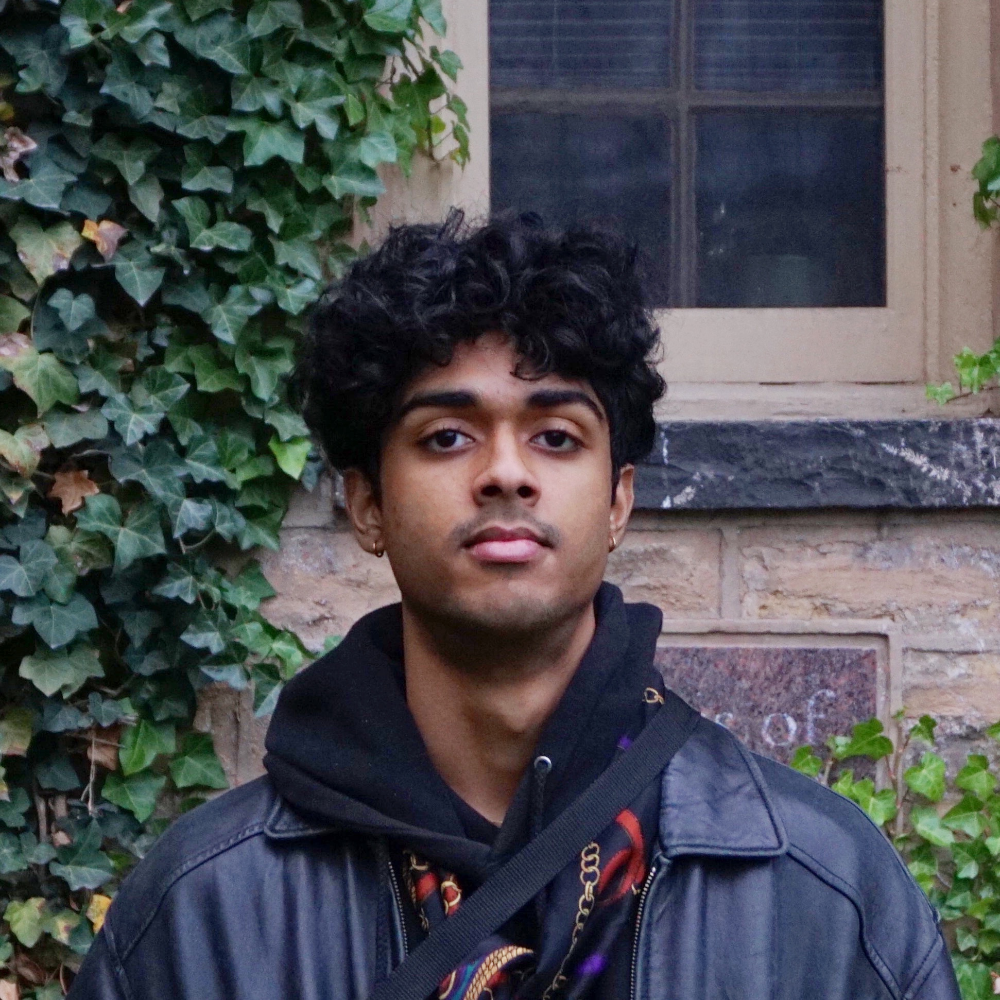

|
Vineeth Vajipey
I am a first-year MS student in Computer Science at Columbia University working on machine learning and robotics. I received my bachelor's degree in Computer Engineering at the University of Maryland in May '23.
Email /
CV /
Google Scholar /
Twitter /
Github
|

|
|
Research
My current research interest lies in tbd.
|
Autonomous Lane Detection and Obstacle Avoidance with End-to-End Imitation Learning
Vineeth Vajipey, Mehmet Eren Kala, Eren Sarıoğlu, Metin Gokasana
unpublished, 2023
paper /
code
We propose a method of data collection to improve generalizability and performance for end-to-end imitation learning based autonomous vehicle systems.
|
GATSBI: An Online GTSP-Based Algorithm for Targeted Surface Bridge Inspection
Harnaik Dhami, Kevin Yu, Troi Williams, Vineeth Vajipey, Pratap Tokekar
ICUAS, 2023
paper
To address the problem of visual surface inspection of a bridge for defects using a UAV, We propose an online planner (GATSBI) which plans a path in a receding horizon fashion to inspect all points on the surface of the bridge.
|
CMSC389F: Reinforcement Learning, Spring 2022
ENEE205: Electric Circuits I, Fall 2021
ENEE101: Introduction to Electrical Engineering, Spring 2021
|
|
{kind=link}